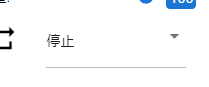

10.11. Audio
Audio is not a 3D object, it is audio as the name suggests. It is played with the Unity standard function, but “ogg” cannot be used due to WebGL restrictions.

For Audio, change the settings in the Audio tab of the top ribbon bar, not in the property list.
Press the next button to load the audio file.

Select the audio name you want to play in the combo box directly below.
Configure for preview playback or animation projects.
preview playback |
for animation registration |
|
 |
It will play instantly. This operation is not registered in the keyframe. |
Register the keyframe after selecting “Play” or “Stop”. |

To register audio to your animation project, use the
Register Keyframebutton in the tab, or right-click in this tab and select theRegister Keyframebutton.

Note
※このタブ内で右クリックした場合に表示される「キーフレーム登録」はオーディオ専用です。どのオブジェクトを選択していても、必ずオーディオだけを対象にしますので、お間違えないようご注意ください。
Warning
※オーディオファイルは権利関係が特に厳しいと思われますので、第三者の音楽ファイルを使用する場合は必ず権利関係を守って使用してください。
The audio loaded in this application will be deleted from the browser when the application is reloaded. Since it is only handled locally and there is no sharing function, only files that the user owns can be used.